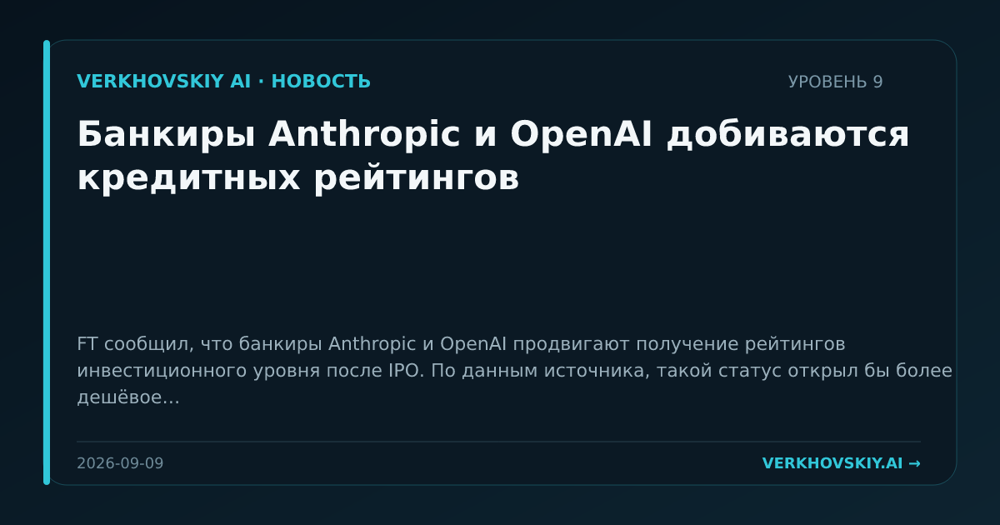

Банкиры Anthropic и OpenAI добиваются кредитных рейтингов
FT сообщил, что банкиры Anthropic и OpenAI продвигают получение рейтингов инвестиционного уровня после IPO. По данным источника, такой статус открыл бы более дешёвое финансирование для AI-лабораторий и их инфраструктурных партнёров. Почему это важно: Финансирование AI-инфраструктуры начинает оформляться как долговой рынок, а не только как венчурная гонка. Это связывает уровень моделей с банковской инфраструктурой и капитальными затратами дата-центров.